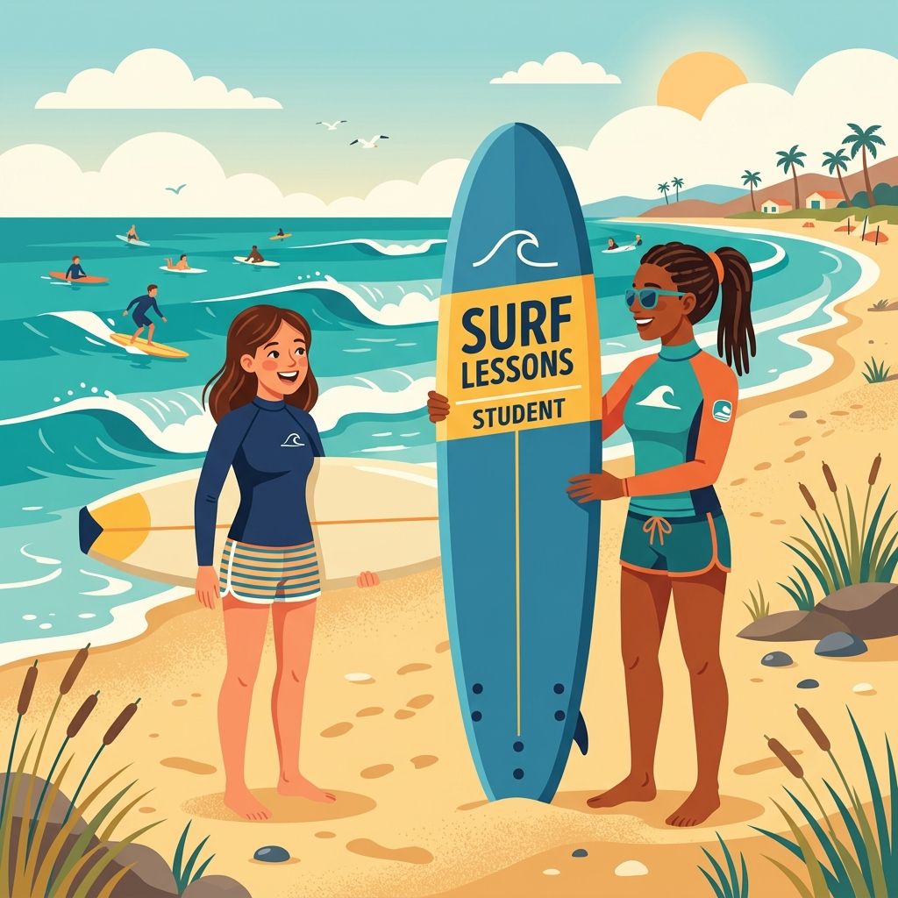
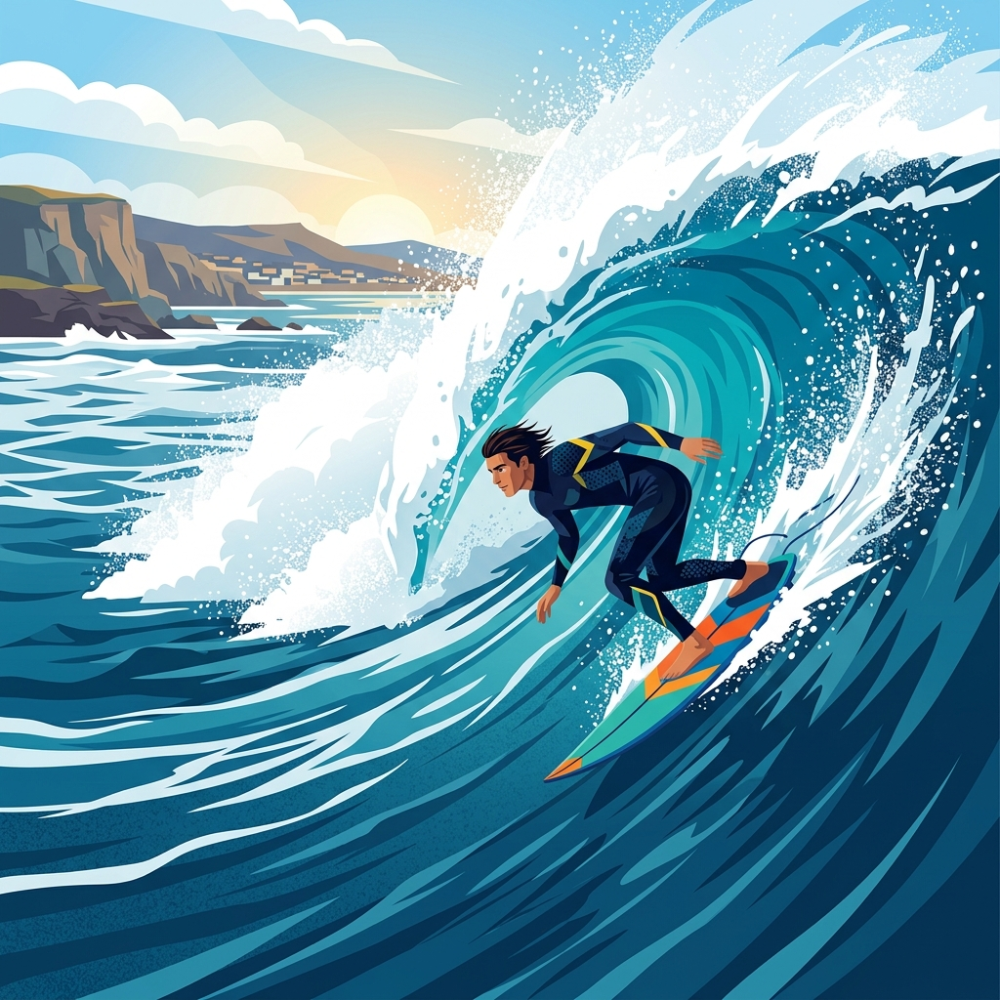
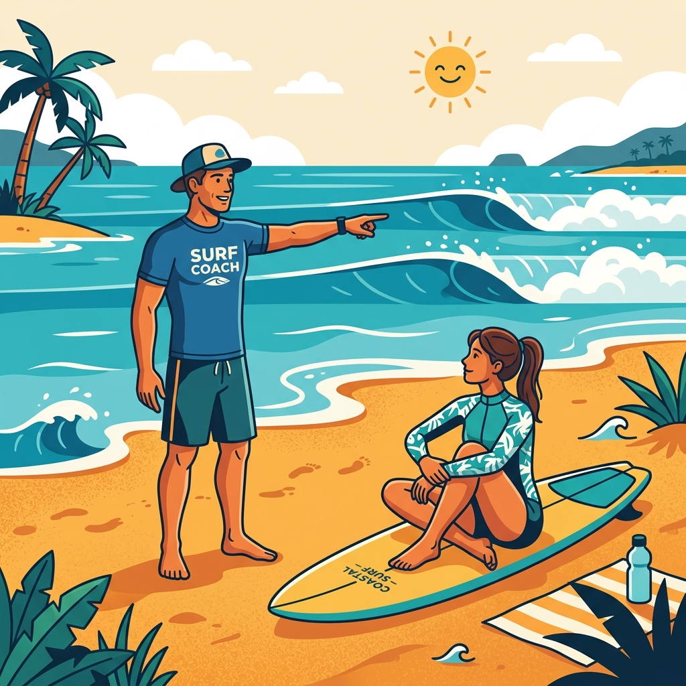

Iniciantes (Softboard)
Nível: Básico / Zero
Foco total em segurança, noções de correntes, remada e o primeiro drop. Pranchão de espuma (softboard) e roupa de borracha inclusos.
Aprenda a surfar ou evolua o seu nível com os melhores instrutores de Imbituba e região.
Oferecemos aulas para todos os perfis, desde quem nunca subiu numa prancha até surfistas que buscam aperfeiçoar suas manobras e leitura de onda no outside.

Nível: Básico / Zero
Foco total em segurança, noções de correntes, remada e o primeiro drop. Pranchão de espuma (softboard) e roupa de borracha inclusos.

Nível: Intermediário / Avançado
Aulas focadas em leitura de onda, posicionamento, análise por vídeo e aprimoramento de manobras de borda.
Nível: Todos
Traga seus amigos ou família! Muita diversão e aprendizado coletivo nas ondas com um ótimo custo-benefício.

Nível: Todos
Atenção 100% exclusiva do instrutor para você. A melhor opção para uma evolução rápida e feedback constante a cada onda.